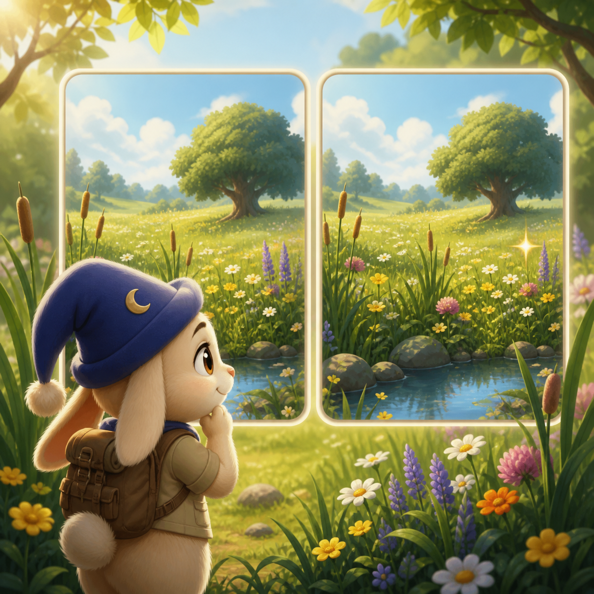

Compare two visible meadow panels and find one changed tile.
Three short rounds · no timer · no lives
Best checks: —

Compare two visible meadow panels and find one changed tile.
Three short rounds · no timer · no lives
Best checks: —
Compare two visible meadow panels and tap the one changed tile in each calm observation round.
There is no timer or lives. Your best check count is saved only in this browser.
Round 1 of 3
0 checksFind the one tile that changed on the right.
Your unfinished meadow search will be discarded. Saved best checks stay safe.